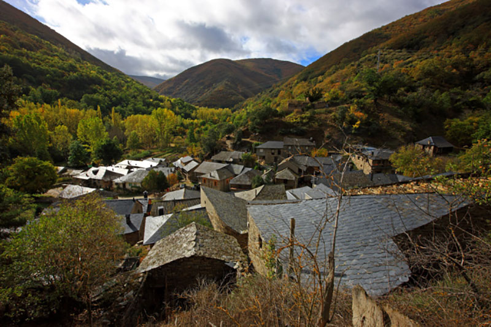
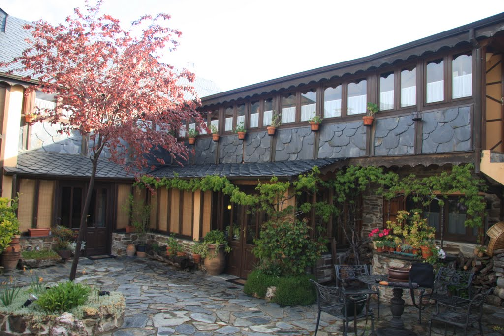

HISTORIA
Al sur de la comarca leonesa del Bierzo se encuentra uno de los valles que mejor combina la naturaleza con la historia. De gran belleza paisajística y exuberante vegetación donde abundan los bosques de castaños, robles y encinas, fue el lugar elegido para la fundación del primer monasterio que daría vida a la Tebaida Berciana.
El valle de Compludo es un paraíso para los amantes de la naturaleza, pero en él descansan los recuerdos de su importante historia. Historia que se remonta a antes de la llegada del Imperio Romano, civilización que dejó muestra de su paso por estas tierras con los restos de diferentes explotaciones auríferas. Evolución que llego a su punto álgido con el nacimiento de la Tebaida Berciana.
Espinoso de Compludo, Carracedo de Compludo, Palacios de Compludo y Compludo son los pueblos que tienen el privilegio de asentarse en este espectacular valle. Pequeños pueblos que descansan en el valle y en las laderas, y que su aislamiento secular ha permitido conservar algunas de las representaciones más importantes de la arquitectura popular berciana.
A través de esta página pretendo enseñaros los encantos de Espinoso de Compludo, una de las joyas arquitectónicas al nivel de Peñalba de Santiago o Castrillo de los Polvazares. En 1996 quedó deshabitado pero por suerte se ha conseguido recuperar, siendo en la actualidad uno de los núcleos más activos del turismo rural. Junto a la arquitectura popular merece una visita la iglesia San Miguel y su retablo churrigeresco del Rosario.